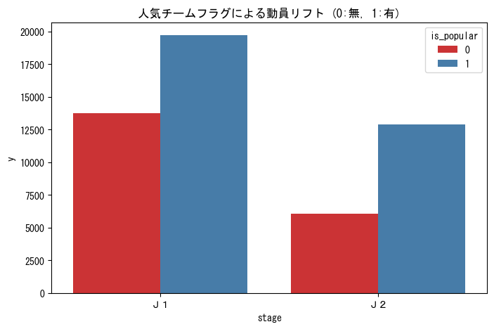
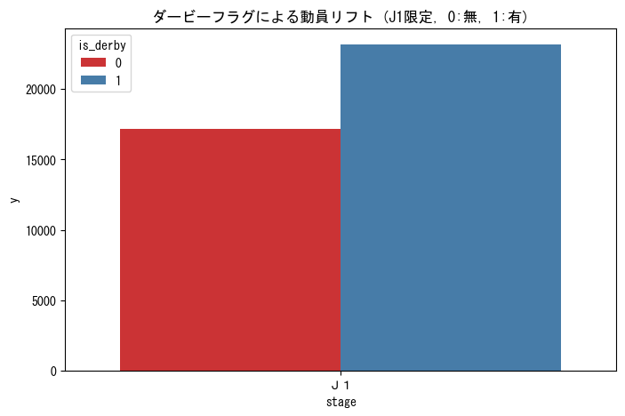

So What?: 特定チーム（浦和、横浜FM等）の存在は、ディビジョンを問わず動員ベースラインを 6,000人以上押し上げる「絶対的な集客装置」である。 - J1リフト: +5,972人 (1.37万 → 1.97万) - J2リフト: +6,811人 (0.60万 → 1.28万) ※J2では動員が2倍以上に跳ね上がる。1-3-2. ダービーマッチフラグ (is_derby) のインパクト

So What?: ダービーはJ1において平均2.3万人の大台を記録する。通常の人気カードを上回る「物理的な熱量」を考慮した最大規模の運営体制が必要。 - J1リフト: +5,993人 (1.71万 → 2.31万) - 分析注記: サンプル数は25試合と限定的だが、一貫して極めて高い動員を維持している。1-3-3. 天候のカテゴリ化 (weather_cat) の集計
カテゴリ 試合数 物理的意味 Sunny 942 観戦日和。ベースライン。 Rainy 307 動員減衰の主要因。 1-4. 結論と今後のアクション (Conclusion & Recommendations)
- 結論: 生成した特徴量は、いずれも平均動員を数千人規模で変動させる「物理的な説得力」を持つことが証明された。
- 次の一手: [ISSUE-03] のモデリングにおいて、これらの高インパクト変数を投入し、予測誤差の最小化を図る。